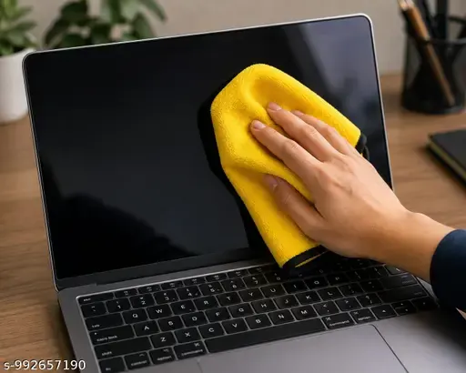
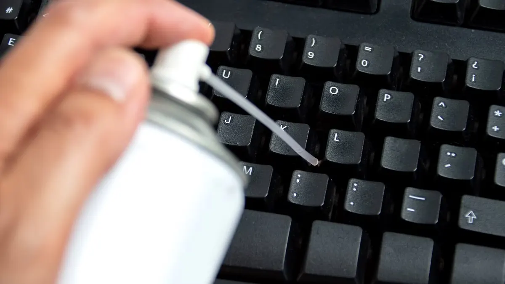

Laptops
How to Clean Your Laptop Safely: Screen, Keyboard and Vents
A practical guide to cleaning a laptop screen, keyboard, touchpad and vents without damaging delicate components.
Introduction: Clean Without Damaging Your Laptop
When a laptop is used, it will accumulate fingerprints, dust, crumbs and dirt. Ensuring you keep it clean regularly can improve the comfort and aesthetics of the laptop. However, there are fragile parts including special coatings, vents and electronics which can be ruined by using the wrong liquid, cloth or tool.
The best way to ensure you’re keeping your laptop safe whilst cleaning it is to ensure you’re taking a gentle approach. Switch the laptop off. Unplug the power and devices. Use a clean microfiber cloth and apply cleaning products to the cloth rather than the laptop. Always refer to the manufacturers cleaning instructions first as different laptop screens have different coatings.

How to Prepare
Save everything and fully turn your laptop off. Unplug the charger, USB devices, memory cards and anything else. If you have a removable battery and the manufacturers instructions state it is okay to remove, do this following their instructions, never force your way into an enclosed case. Place your laptop on a clean flat surface in a well lit area.
Wash your hands. Make sure you are not near any drinks or open containers. Get two clean microfiber cloths, a soft brush and suitable cleaning product approved by the manufacturer. Don’t use paper towels, tissues, abrasive cloths, household glass cleaner, bleach or harsh solvents unless specifically approved.
1. Cleaning the screen
The screen is one of the most fragile parts of your laptop. Use a clean dry microfiber cloth to gently wipe dust from the screen. If your screen still has stubborn fingerprints, refer to your screen manufacturers instructions. Some allow you to use a slightly damp cloth whilst others will have specific instructions for what to use on your screen.
Never spray any liquid on your screen as you risk getting it into the bezel, hinges and layers. Don’t use window cleaner, alcohol or disinfectant wipes unless your laptop specifically states it is safe. Don’t press down on the screen with your fingernail or any abrasive cloth. If you find any marks aren’t coming off with gentle cleaning, stop.
2. Cleaning the keyboard
Switch your laptop off. Tilt it slightly and gently brush any dust or crumbs from around the keys. If the manufacturer allows use a can of compressed air in short bursts. Ensure it is held upright and at the right distance away. Don’t get any moisture anywhere.
If you can, gently wipe the keys with a slightly damp microfiber cloth. Don’t pour any cleaning product onto your keyboard, use a wet sponge or remove any key caps. Unless they are specifically designed to be removed by the user. Laptop keyboards can be easily broken and you may not notice any damage caused by liquid.

3. Cleaning the touchpad and palmrest
The touchpad and palmrest can build up oil from your hands. Use a clean microfiber cloth and a little bit of suitable cleaning product if approved by the manufacturer. Gently wipe the touchpad. Don’t get any moisture into the joins, buttons or edges of the touchpad. Don’t try to rub away any marks with a sharp object.
If your touchpad isn’t responding as well as usual after cleaning, ensure it is completely dry before switching your laptop back on. Don’t press down hard or let any liquid sit around the touchpad. If your palmrest is a textured or coated surface, follow the specific instructions for that surface.
4. Cleaning vents and external areas
Your laptop can accumulate dust in the air intake and exhaust areas. Turn your laptop off and unplug. Use a soft brush to remove any dust from the surface. If the manufacturer allows, use a can of compressed air. Be careful not to push any dust further into the laptop. Don’t use cotton buds, pins, screwdrivers or anything into the vents.
You may need to clean the internal fans and heatsinks. Opening your laptop can affect your warranty and can cause damage to clips, cables and battery. If you’re still having issues with blocked vents or overheating, have it professionally cleaned.
5. Ports and hinges
USB, HDMI, audio and charging ports can accumulate lint. Visually check the ports with your laptop switched off. Don’t put any metal objects into the ports or use any wet cleaning products. If there is anything stuck in the port, follow the manufacturer’s instructions or ask a technician. Charging ports can be expensive to repair if damaged.
Use a dry microfiber cloth or soft brush to remove any dust from the surface of the hinges. Don’t add any oil or lubricant unless the manufacturer specifically tell you to. This can cause the lubricant to run onto the screen or internal parts and cause more dust.
If you spill any liquid on your laptop, switch it off if possible. Unplug. Don’t test your keyboard. Don’t use a hairdryer, heater or rice. This won’t necessarily dry your laptop and ensure no moisture got onto the motherboard or battery.
Have it checked by a professional as soon as possible. Especially if it was a sugary, salty or corrosive liquid. If the battery looks swollen, hot, smoking or damaged don’t touch it. Keep it away from any flammable items and seek help from a qualified person.
How often should I clean my laptop?
You may want to give it a light wipe on the outside once every couple of weeks. Or a thorough clean if you can see dust or fingerprints. It really depends on where you use your laptop. If you use it in a dusty workshop or office it may need more regular cleaning than if you use it in a clean home.
Try checking your vents regularly. If you notice any difference in the fan noise or temperature. Only clean if you can visibly see dust and follow the manufacturers maintenance instructions.
Common mistakes
Don’t spray any liquid onto your laptop. Don’t use abrasive cleaning products. Don’t press down hard on the screen. Don’t pour any liquid between the keys. Don’t use any household vacuum attachments directly on the ports or internal areas. Don’t use any sharp objects to remove debris. Don’t open up a sealed battery or try to squish down a swollen battery.
Not all screens can be cleaned with alcohol. Anti glare screens and other coatings may be affected by cleaning products that are okay to use on some glass surfaces. Always follow the manufacturers instructions.
Conclusion
To safely clean your laptop you’ll just need a microfiber cloth, soft brush and approved cleaning method from the manufacturer. Ensure you’ve turned your laptop off and unplugged. Gently wipe the screen. Don’t get any liquid into any openings. Be careful with the vents. If you have any dust internally, spilt liquid, blocked ports or signs of damage to the battery it is safer to have it professionally serviced. Regular gentle cleaning will help keep your laptop comfortable to use..
Need a hand with your printer or laptop?
Printerworld sells printers, laptops and genuine supplies, and repairs and services both. Bring in your model number and we will help you get it right.